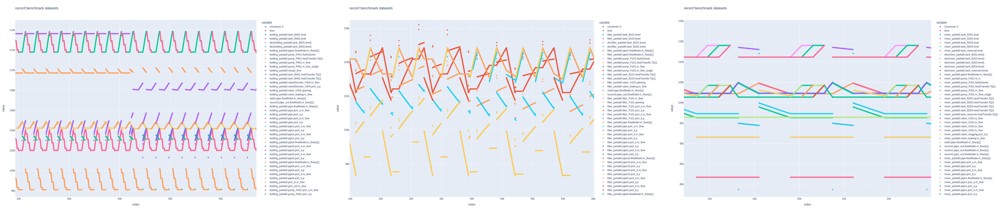

Getting started¶
This page will provide you with a quick introduction on how BeRfiPl is structured and when to use it and what to use it for.
How BeRfiPl is structured¶
The core of BeRfiPl is a comprehensive simulation of a modular Cyber-Physical Process Plant. There are four different modules, which can be concatenated at will into complex Cyber-Physical Production Systems (CPPS). Each module offers a distinct functionality and allows for diverging and converging volume flows (cf. Fig. 1). The exact functionalities are explained on the simulation model pages.
- The simulation environment employs different files and filetypes:
- module_partial.mo
The module_partial.mo files include the simulation models of the individual modules. They comprise the environmental parameters, the individual components of each module and how the components are connected. Additionally they include a state-graph, which contains a basic control algorithm for each model. Changes on the module_partial.mo files are not recommended.
- module_superModel.mo
The module_superModel.mo files include the mother class of the module_partial.mo files. Within the mother class, the parametrization of the individual models can be influenced. This entails the control of the main components of a module, as well as simulated fault scenarios.
- call.mos
The call.mos files contains the terminal code for running a simulation model. Within the call.mos file, the modules and superModels are imported and the simulation setup - e.g. simulation time, steps, etc. - can be defined.
- config.json
The config.json file contains the simulation setup, when using the Python API of BeRfiPl. Besides the description of the employed modules and their interconnection, a description of the employed products and their transformation is included. The benchmark_config.json includes the setup the create BeRfiPl, but of course individual setups can also be defined.
- run.py
The Python files contain functions to run the OpenModelica simulation within a Python call. They also manage saving and preprocessing the datasets and only keeping desired, or relevant values. Some trivial visualization functions are included, as well.
.png){kind=link}
Fig. 1: The four functional modules of BeRfiPl: a) filter, b) mixer, c) distill, d) bottling. The modules can be randomly interconnected
When to use BeRfiPl¶
- There are two ways to use BeRfiPl:
- creating the benchmark datasets
A predefined set of datasets to train and evaluate Machine Learning approaches will be created.
- creating custom datasets
For testing specific aspects within own Machine Learning Approaches you can create your own simulation setup.
In any case you should have a look into first steps to install all dependencies and requirements
For creating the predefined datasets of BeRfiPl you simply have to install the dependencies mentioned in
First steps and run create_benchmark.py.
All datasets will be saved in explicitly named directories for all three fault cases in datasets directory.
For creating custom datasets you can adapt config.json, call.mos, module_superModel.mo, and module.mo files. Using OpenModelica’s OMEdit is strongly recommended, when doing so.
{kind=link}
Fig. 2: Plots from datasets created with different modules of BeRfiPl